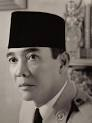
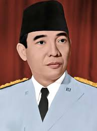

Welcome to the blog of Ir.soekarno
|

Ir. Soekarno
Nama : Soekarno Lahir: 6 Juni 1901, Surabaya Meninggal: 21 Juni 1970, Jakarta Nama lengkap: Sukarno Pasangan: Heldy Djafar (m. 1966–1969), LAINNYA Pendidikan: Technische Hoogeschool te Bandoeng (1921–1926), Institut Teknologi Bandung Anak: Megawati Soekarnoputri, Sukmawati Soekarnoputri |

|